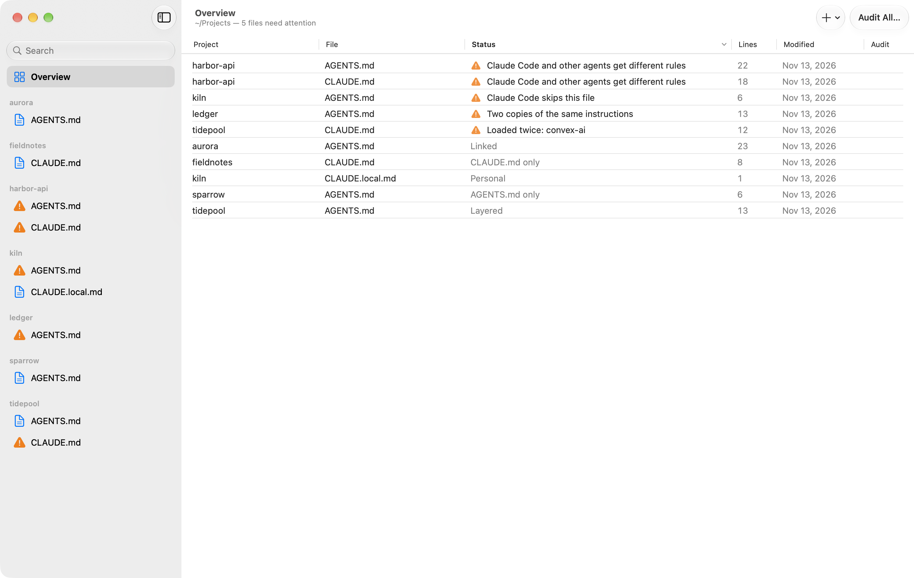
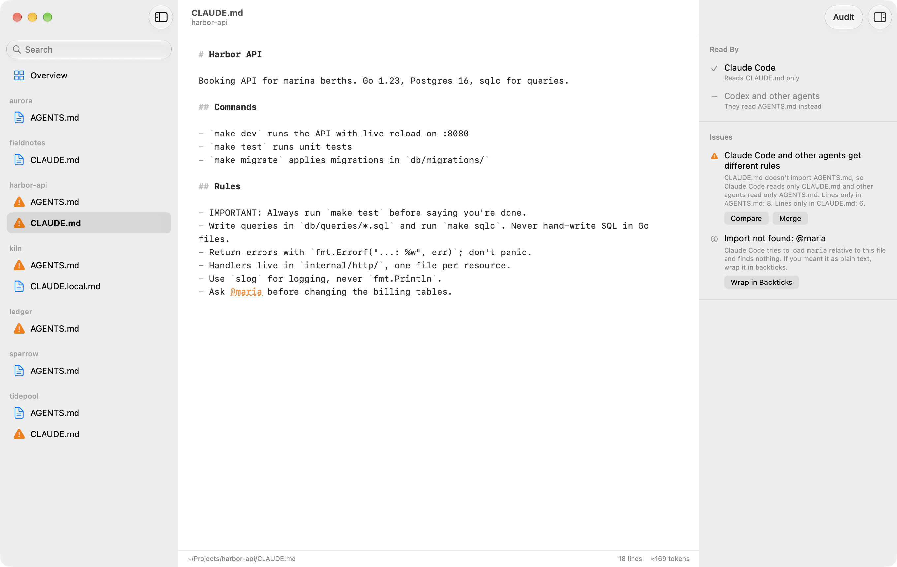
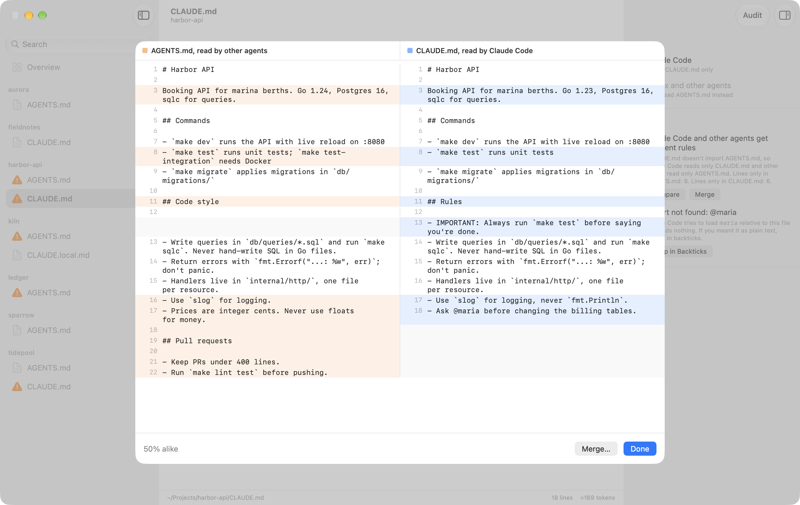
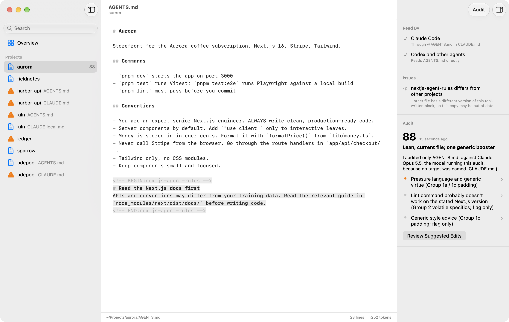

Every CLAUDE.md and AGENTS.md on your Mac, in one place.
Rulebook finds the instruction files your coding agents read, across all your projects. It shows which ones have drifted apart, which ones an agent never sees, and which were written for last year's models. Then it helps you fix them.
Free and open source. Needs macOS 14 or later.

See what each agent actually reads
Claude Code reads CLAUDE.md. Codex, Cursor and most other agents read AGENTS.md. When a project has both, Rulebook works out how they relate and tells you who reads each file.
- Linked
CLAUDE.mdonly importsAGENTS.md, or is a symlink to it. Every agent reads the same file.- Layered
CLAUDE.mdimportsAGENTS.mdand adds rules only Claude Code gets.- Duplicated
- Two identical copies. Rulebook shows one and saves both.
- Diverged
- Two files with different content, so each agent misses rules the other one gets.
- Skipped
- An
AGENTS.mdthat Claude Code never loads, because aCLAUDE.local.mdor a parentCLAUDE.mdtakes its place.

Compare and merge files that drifted
When two files have drifted apart, Compare puts them side by side. Merge asks your agent to combine them into one AGENTS.md and a CLAUDE.md that imports it. You review the result before anything is saved.

Audit with the agent you already use
An audit checks a file against its project. It looks for instructions written for older models, commands and paths that no longer exist, and rules that contradict each other. You get a score, findings that jump to the text they are about, and suggested edits as a diff.
Audits run through Claude Code or Codex with your existing login, and they can't change your files. The app and its audits come in English and Simplified Chinese.

Install
- Download Rulebook.zip and open it.
- Drag Rulebook to your Applications folder and open it.
- Choose the folder that holds your projects.
This first version isn't notarized by Apple yet, so macOS will refuse to open it the first time. To allow it, open System Settings, go to Privacy & Security, and click Open Anyway next to the message about Rulebook.
You can also build it from source with Xcode 26 or later.